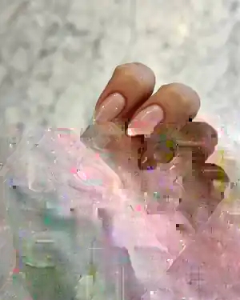
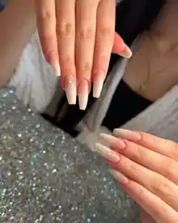
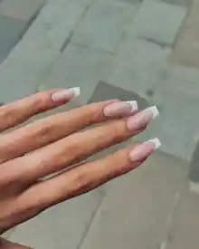

01 / SIGNATUREProtez
Detayları keşfet ↗
Kızılay · Ankara
Kendinize ayırdığınız zamanı daha özel bir deneyime dönüştüren Mira.
Bir güzellik adresinden fazlası
Mira, 2015'ten bu yana Ankara Kızılay'da güzellik ve bakım hizmetleri sunan bir merkez olarak; özellikle protez tırnak, ipek kirpik, kalıcı oje, manikür, pedikür ve cilt bakımı alanlarında deneyim sunuyor.
Burada amaç yalnızca bir uygulamayı tamamlamak değil; randevudan çıkışa kadar özenli, hijyenik ve kişisel bir deneyim yaratmak.
Mira'yı ziyaret edin ↗Hizmetler
İhtiyacınıza göre seçilen uygulamalar. Detayları keşfedin veya randevu akışından doğrudan tercih ettiğiniz hizmeti seçin.


Hijyen, uzmanlık ve size ayrılan zaman; Mira deneyiminin merkezinde.
Misafir deneyimleri

GERÇEK MİSAFİR DENEYİMİGerçekten çok ilgililer. Kalıcı oje yaptırmaya arkadaşımla gittik. Tırnaklarımızı Elif hanım yaptı. İşçiliği harika. Sahibi hanımefendi hoş sohbet. Hijyen en önemli şeylerden biri bence ve hijyen konusunda içim çok rahattı. Fiyat olarak ortalamanın bir tık üstünde tuttu çünkü öncesinde başka yerde yaptırdığımız jelin çıkartma ücreti biraz fazlaydı fakat verdiğiniz ücretin karşılığını memnuniyet olarak alıyorsunuz.

GERÇEK MİSAFİR DENEYİMİProtez tırnak için geldik herkes çok güler yüzlü çok ilgililer elif hanıma çok teşekkür ederim.

GERÇEK MİSAFİR DENEYİMİÇok memnun kaldığım bir yer ve işlerini çok özenli, titiz bir şekilde yapıyorlar özellikle Roza hanım işinde çok profesyonel samimi biri. Ben protez tırnak yaptırdım kendisine mükemmel oldu ve diğer işlemleri de yaptırmayı düşünüyorum.
@miralifeguzelliksalonu
İletişim
Atatürk Bulvarı 117/9, 06420 Çankaya / Ankara
Mira'nın hikâyesi
2015'ten beri Kızılay'da.
Mira Güzellik Salonu, Ankara Kızılay'da 2015 yılında başlayan bir güzellik ve bakım yolculuğu. Kurucusu Mira Ceceli'nin protez tırnak ve ipek kirpik alanındaki uzun yıllara dayanan deneyimi; hijyen, kalite ve güler yüzlü hizmet anlayışıyla birleşiyor.
Bizim için bakım, yalnızca bir uygulamanın sonucu değil; kendinize ayırdığınız zamanın tamamı. Bu nedenle her randevuyu kişisel, özenli ve sakin bir deneyim olarak ele alıyoruz. Protez tırnaktan ipek kirpiğe, kalıcı ojeden manikür-pedikür ve cilt bakımına kadar uzmanlık alanlarımızı sürekli yenilenen tekniklerle geliştiriyoruz.